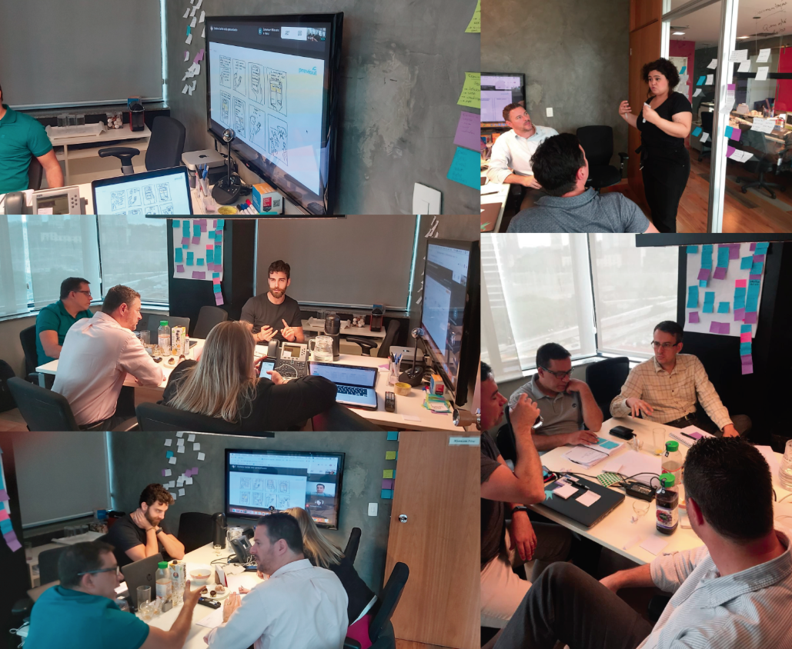

Previsul.
End-to-End Service Design
for an Insurance Claim Journey
Design de Serviço End-to-End
para uma Jornada de Sinistros
Redesigning a journey
that was broken for everyone.
Redesenhando uma jornada
que estava quebrada para todos.
Previsul is an insurance company with complex operations and several legacy systems. They brought a clear challenge: map the entire insurance claim journey — from the first notice made through the 0800 call center, all the way to the final payment resolution.
A Previsul é uma seguradora com operações complexas e diversos sistemas legados. Trouxeram um desafio claro: mapear toda a jornada de sinistros — desde o primeiro aviso feito pelo call center 0800, até a resolução final do pagamento.
The project started in October 2019 and the UX phase was completed in March 2020. As UX and Service Lead, I led discovery, journey mapping, ideation, and interface design — collaborating closely with internal teams, a third-party call center, analysts, and broker agencies across multiple cities.
O projeto começou em outubro de 2019 e a fase de UX foi concluída em março de 2020. Como Líder de UX e Serviço, conduzi discovery, mapeamento de jornada, ideação e design de interface — colaborando de perto com equipes internas, call center terceirizado, analistas e corretoras em múltiplas cidades.
The goal was to create a digital solution that simplified communication between all parties — claimants, brokers, analysts, and third-party providers — transforming a bureaucratic, fragmented process into something more human, clear, and efficient.
O objetivo era criar uma solução digital que simplificasse a comunicação entre todas as partes — segurados, corretores, analistas e prestadores terceirizados — transformando um processo burocrático e fragmentado em algo mais humano, claro e eficiente.
This was not just a UX project. It was a service redesign that touched operations, legacy systems, legal compliance, and emotional experience — all at once.
Não foi apenas um projeto de UX. Foi um redesign de serviço que tocou operações, sistemas legados, conformidade legal e experiência emocional — tudo ao mesmo tempo.
A process fragmented
across cities, tools, and people.
Um processo fragmentado
entre cidades, ferramentas e pessoas.
The main challenge was to unify fragmented processes and tools spread across multiple cities and user profiles — while maintaining accuracy and regulatory compliance.
O principal desafio era unificar processos e ferramentas fragmentados espalhados por múltiplas cidades e perfis de usuários — mantendo precisão e conformidade regulatória.
Every claim involved at least 4 different parties operating in silos: a third-party call center in Alphaville, internal analysts in Porto Alegre, broker agencies scattered across Brazil, and the claimants themselves — each with different tools, expectations, and levels of information.
Cada sinistro envolvia pelo menos 4 partes diferentes operando em silos: um call center terceirizado em Alphaville, analistas internos em Porto Alegre, corretoras espalhadas pelo Brasil, e os próprios segurados — cada um com ferramentas, expectativas e níveis de informação diferentes.
It was also about bringing empathy to a moment that's inherently stressful. Someone filing an insurance claim has just experienced a loss. The process should not make it worse.
Também se tratava de trazer empatia a um momento inerentemente estressante. Alguém que abre um sinistro acabou de sofrer uma perda. O processo não deveria piorar as coisas.
"The process was designed for the system, not for the person in it. Our job was to reverse that."
"O processo foi desenhado para o sistema, não para a pessoa dentro dele. Nosso trabalho era inverter isso."
Double Diamond —
four stages, no shortcuts.
Diamante Duplo —
quatro etapas, sem atalhos.
The Double Diamond is the methodology that makes the most sense to me as a product designer. The goal is to move through four macro stages — always expanding before converging, never jumping to solutions before understanding the problem space.
O Diamante Duplo é a metodologia que mais faz sentido para mim como designer de produto. O objetivo é percorrer quatro macro etapas — sempre expandindo antes de convergir, nunca pulando para soluções antes de entender o espaço do problema.
After understanding the scenario, I built a detailed plan with weekly views and a to-do list. The client wanted visibility at every step — and it also kept me from going off track in a project this complex.
Após entender o cenário, construí um plano detalhado com visões semanais e uma lista de tarefas. O cliente queria visibilidade em cada etapa — e isso também me manteve no caminho certo em um projeto dessa complexidade.
I didn't map the journey
from a desk. I lived it.
Eu não mapeei a jornada
de uma mesa. Eu a vivi.
The immersion phase was structured in four parts — each one revealing a layer of the journey that would have been invisible from the outside. More than 5 hours of video and audio were generated in the field interviews alone.
A fase de imersão foi estruturada em quatro partes — cada uma revelando uma camada da jornada que seria invisível de fora. Mais de 5 horas de vídeo e áudio foram geradas apenas nas entrevistas de campo.

I met with Previsul's stakeholders and we drew the claim journey as they understood it. It quickly became clear that wasn't enough — there were multiple characters involved: brokers, policyholders, beneficiaries, analysts, and third parties. I needed to know them all.
Encontrei os stakeholders da Previsul e desenhamos a jornada de sinistros como eles a entendiam. Rapidamente ficou claro que não era suficiente — havia múltiplos personagens envolvidos: corretores, segurados, beneficiários, analistas e terceiros. Eu precisava conhecer todos.

The first contact a claimant had was a phone call. I went on-site to the third-party company in Alphaville and interviewed everyone in the process: Call Center agents, Backoffice operators, and initial Analysts. Everything was documented and redesigned.
O primeiro contato de um segurado era uma ligação telefônica. Fui até a empresa terceirizada em Alphaville e entrevistei todos no processo: atendentes do Call Center, operadores de Backoffice e Analistas iniciais. Tudo foi documentado e redesenhado.

After the call center, the claim reaches Previsul's own analysts — a long and complex process. I flew to Porto Alegre to observe and interview the analyst team directly, generating over 5 hours of recorded material.
Após o call center, o sinistro chega aos próprios analistas da Previsul — um processo longo e complexo. Voei até Porto Alegre para observar e entrevistar a equipe de analistas diretamente, gerando mais de 5 horas de material gravado.

To close the complete journey, one character was still missing: the Broker. I conducted calls and documented the entire broker process across three different insurance agencies — their role, their friction points, and their relationship with the claimant.
Para fechar a jornada completa, um personagem ainda faltava: o Corretor. Realizei ligações e documentei todo o processo do corretor em três diferentes agências de seguros — seu papel, seus pontos de fricção e sua relação com o segurado.
Six roles.
One broken process.
Seis papéis.
Um processo quebrado.
The immersion revealed distinct behavioral profiles across the service. Understanding each one — their motivations, anxieties, and working styles — was essential before designing anything.
A imersão revelou perfis comportamentais distintos ao longo do serviço. Entender cada um — suas motivações, ansiedades e estilos de trabalho — era essencial antes de projetar qualquer coisa.
Young, early-career. Passive and compliant, calm on the phone. Not proactive — they do exactly what they're told. Dependent on clear scripts.
Jovem, início de carreira. Passivo e obediente, calmo ao telefone. Não proativo — faz exatamente o que é instruído. Dependente de roteiros claros.
TMAResponsible for gathering all necessary documents. Needs to be more proactive and curious than the call center. Must connect the dots before passing the file forward.
Responsável por reunir toda a documentação necessária. Precisa ser mais proativo e curioso que o call center. Deve conectar os pontos antes de encaminhar o processo.
TMAAnalytical profile. Noticeably higher education level than call center. Calm, perfectionist, attentive. Conducts initial screening before escalating to Previsul.
Perfil analítico. Nível de escolaridade visivelmente maior que o call center. Calmo, perfeccionista, atento. Realiza triagem inicial antes de escalar para a Previsul.
TMAConfident when experienced. Knows document lists and policy types by heart. Not sentimental about claims — focuses on fair, accurate analysis. Needs a reliable single source of truth.
Confiante quando experiente. Conhece listas de documentos e tipos de apólice de cor. Não sentimental sobre sinistros — foca em análise justa e precisa. Precisa de uma fonte única e confiável de informações.
PrevisulNeeds visibility over the full claim pipeline. Requires management features — overview dashboards, team performance, escalation controls. Strategic, not operational.
Precisa de visibilidade sobre todo o pipeline de sinistros. Requer funcionalidades de gestão — dashboards de visão geral, performance da equipe, controles de escalação. Estratégico, não operacional.
PrevisulFlexible, helpful, adaptable to any channel — WhatsApp, email, phone, in-person. Experienced with bureaucracy, tries to shield clients from it. Ready to use any tool that speeds up the process.
Flexível, prestativo, adaptável a qualquer canal — WhatsApp, e-mail, telefone, presencial. Experiente com burocracia, tenta proteger os clientes dela. Pronto para usar qualquer ferramenta que agilize o processo.
ExternalExterno
Service Blueprints —
making the invisible visible.
Service Blueprints —
tornando o invisível visível.
Only after analyzing the current service experience could we build a map to guide the next stages. The Service Blueprint was used to document the journeys of all audiences involved — pointing out contact points, channels, feelings, pain points, and opportunities.
Somente após analisar a experiência atual do serviço pudemos construir um mapa para guiar as próximas etapas. O Service Blueprint foi usado para documentar as jornadas de todos os públicos envolvidos — apontando pontos de contato, canais, sentimentos, dores e oportunidades.

- Mapping of daily routines across 3 roles
- Client contact points identified
- Internal profile documentation
- Pain points and key insights
- Mapeamento de rotinas diárias em 3 funções
- Pontos de contato com o cliente identificados
- Documentação de perfis internos
- Pontos de dor e insights-chave

- Full analysis and payment workflow mapped
- Contact points with clients and partners
- Analyst and broker profiles documented
- Critical pain points and opportunities
- Fluxo completo de análise e pagamento mapeado
- Pontos de contato com clientes e parceiros
- Perfis de analistas e corretores documentados
- Pontos de dor críticos e oportunidades
Workshop, storyboards,
and task flows.
Workshop, storyboards,
e fluxos de tarefas.
After understanding all the processes, it was time to show the stakeholders the pain points found — and raise the flag on the most critical ones. A co-creation workshop brought together people from all areas of the claims department, plus special participants from Previsul.
Após entender todos os processos, era hora de mostrar aos stakeholders os pontos de dor encontrados — e levantar a bandeira dos mais críticos. Um workshop de cocriação reuniu pessoas de todas as áreas do departamento de sinistros, além de participantes especiais da Previsul.
Together, we discussed the pains and defined the actions needed to solve them. The workshop delivered prioritized pain points, storyboards, and task flows — the foundation for everything that followed.
Juntos, discutimos as dores e definimos as ações necessárias para resolvê-las. O workshop entregou pontos de dor priorizados, storyboards e fluxos de tarefas — a base para tudo que veio depois.
After the workshop, we created task flows for all planned products. This was the map that initiated the wireframe phase — ensuring every screen had a clear purpose and a documented user need behind it.
Após o workshop, criamos fluxos de tarefas para todos os produtos planejados. Este foi o mapa que iniciou a fase de wireframes — garantindo que cada tela tivesse um propósito claro e uma necessidade documentada do usuário por trás.
Before any pixel was moved to development, we ran usability tests with actual users in early prototypes — catching issues early, minimizing rework, and validating the direction before the real cost of development began.
Antes de qualquer pixel ir para desenvolvimento, realizamos testes de usabilidade com usuários reais em protótipos iniciais — identificando problemas cedo, minimizando retrabalho e validando a direção antes que o custo real do desenvolvimento começasse.


Testing with real users
before any development.
Testando com usuários reais
antes de qualquer desenvolvimento.
To give voice to the user, we needed to take the product to them and collect feedback in a simple and clear way. We conducted usability tests with product users at early prototype stages — well before development began.
Para darmos voz ao usuário, precisávamos levar o produto até ele e coletar o feedback, de forma simples e clara. Conduzimos testes de usabilidade com os usuários do produto em estágios iniciais de protótipo — muito antes do desenvolvimento começar.
This ensured the lowest number of errors in the final product, minimizing costs and time. Tests were conducted with both broker profiles and internal analyst profiles.
Isso garantiu a menor quantidade de erros no produto final, minimizando custos e tempo. Os testes foram realizados com perfis de corretores e perfis de analistas internos.


Two connected products.
One redesigned journey.
Dois produtos conectados.
Uma jornada redesenhada.
The design phase produced two distinct but deeply connected products — one facing outward toward claimants and brokers, the other facing inward toward analysts and managers. Together, they replaced what was previously handled entirely through the 0800 phone line.
A fase de design produziu dois produtos distintos mas profundamente conectados — um voltado para fora, para segurados e corretores, o outro voltado para dentro, para analistas e gestores. Juntos, substituíram o que antes era tratado inteiramente pela linha telefônica 0800.

A web channel for clients and brokers to file and track insurance claims online — replacing the 0800-only process. Simple, visual, and designed for the most stressful moments.
Um canal web para clientes e corretores registrarem e acompanharem sinistros online — substituindo o processo exclusivo pelo 0800. Simples, visual e desenhado para os momentos mais estressantes.

A full regulation platform for analysts, managers, and partners — with differentiated access per profile and integration with legacy systems (SNGS and I4PRO). The single source of truth for the entire operation.
Uma plataforma completa de regulação para analistas, gestores e parceiros — com acesso diferenciado por perfil e integração com sistemas legados (SNGS e I4PRO). A fonte única de verdade para toda a operação.


Measuring what matters —
not just what's easy.
Medindo o que importa —
não apenas o que é fácil.
To guide continuous improvement after launch, I defined a metrics strategy using the HEART framework — focusing on what truly reflects product quality, not just vanity metrics. Each product got its own measurement plan aligned with its business and user objectives.
Para guiar a melhoria contínua após o lançamento, defini uma estratégia de métricas usando o framework HEART — focando no que realmente reflete a qualidade do produto, não apenas métricas de vaidade. Cada produto recebeu seu próprio plano de medição alinhado aos seus objetivos de negócio e de usuário.
Business goal: Enable online claim filing in a simple, visual way, with step-by-step tracking.
Objetivo de negócio: Possibilitar o aviso de sinistro via web de forma fácil, descomplicada, em tarefas simples e com acompanhamento.
Product goal: Allow users to file a claim, upload documents, and track analysis stages. Also view previously filed claims.
Objetivo de produto: Permitir que o usuário faça um aviso de sinistro, envie documentos e acompanhe as etapas de análise. Permitir também que visualize sinistros já avisados.
- Satisfaction & Perceived ease of use
- Net Promoter Score
- Exit-seeking behavior
- Flow completion rate for claim filing
- Time to upload a document
- Documentation submission percentage
- Page loading time
- Satisfação & Facilidade de uso percebida
- Net Promoter Score
- Busca pela saída
- Taxa de usuários que completam o fluxo de aviso
- Tempo para subir um documento
- Porcentagem de envio de documentação
- Tempo de carregamento de páginas
Business goal: Enable claim management by GESIN, with potential use by other departments and service providers.
Objetivo de negócio: Possibilitar a gestão de sinistros pela GESIN, também podendo ser utilizada por outras áreas da empresa e prestadores de serviço.
Product goal: Allow users to search, analyze, and regulate claims, register client data, and administer the tool with management features.
Objetivo de produto: Permitir que o usuário busque, analise e regule um sinistro, registre dados sobre o cliente, e administre a ferramenta com features gerenciais.
- Satisfaction & Perceived ease of use
- Net Promoter Score
- Exit-seeking behavior
- Bounce rate
- Time spent at each stage
- Page loading time
- Satisfação & Facilidade de uso percebida
- Net Promoter Score
- Busca pela saída
- Taxa de rejeição (bounce rate)
- Tempo que leva em cada etapa
- Tempo de carregamento de páginas
From invisible
to accountable.
De invisível
a rastreável.
The outcome was the creation of two connected products that brought visibility to the entire claim process — for clients, brokers, analysts, and managers alike.
O resultado foi a criação de dois produtos conectados que trouxeram visibilidade a todo o processo de sinistros — para clientes, corretores, analistas e gestores igualmente.
Visibility for clients and brokers. Reduced rework across internal teams. A single source of truth for the whole operation — replacing a fragmented, phone-dependent process that left everyone operating blind.
Visibilidade para clientes e corretores. Redução de retrabalho nas equipes internas. Uma fonte única de verdade para toda a operação — substituindo um processo fragmentado e dependente de telefone que deixava todos operando no escuro.
The prototype delivered to Previsul became the direct basis for the final product development — according to the team that worked with it.
O protótipo entregue à Previsul se tornou a base direta para o desenvolvimento do produto final — segundo a equipe que trabalhou com ele.
In total: 151 high-fidelity screens, 40+ pain points addressed, and 22 stakeholders and users engaged across the process.
No total: 151 telas de alta fidelidade, 40+ pontos de dor endereçados, e 22 stakeholders e usuários engajados ao longo do processo.
UX phaseduração da
fase de UX
tests conductedentrevistas e
testes realizados
mapped & addressedpontos de dor
mapeados e endereçados
screens designedtelas de alta fidelidade
desenhadas
Na Previsul Seguradora, tive a oportunidade de trabalhar em conjunto com essa profissional fantástica, que nos entregou um projeto fantástico na leitura da Jornada do Cliente para Sinistros, resultando em um protótipo que, no final, foi usado para o desenvolvimento do produto final. Super recomendo.
At Previsul Seguradora, I had the opportunity to work alongside this fantastic professional, who delivered a fantastic project mapping the Customer Journey for Claims, resulting in a prototype that, in the end, was used for the final product development. Highly recommended.
151 screens.
Every one with a reason.
151 telas.
Cada uma com um motivo.
Both products were designed at high fidelity, with prototype-level quality that was directly handed off for development. A selection of screens from both the Portal and the Management Tool:
Ambos os produtos foram desenhados em alta fidelidade, com qualidade de protótipo que foi entregue diretamente para desenvolvimento. Uma seleção de telas do Portal e da Ferramenta de Gestão:

"Mapping 40 pain points, interviewing 22 stakeholders, redesigning the entire claims journey — from the 0800 call to the payment — and delivering two connected products in high fidelity. That was the work." "Mapear 40 pontos de dor, entrevistar 22 stakeholders, redesenhar a jornada inteira de sinistros — do 0800 ao pagamento — e entregar dois produtos conectados em alta fidelidade. Esse foi o trabalho."
through complex products? Interessado em como eu penso
produtos complexos?